소방설비기사(전기분야) (2004-05-23 기출문제)
1과목: 소방원론
1. 문틈으로 연기가 새어 들어오는 화재를 발견할 때의 안전대책으로 잘못된 것은?
- 빨리 문을 열고 복도로 대피한다.
- 바닥에 엎드려 숨을 짧게 쉬면서 대피대책을 세운다.
- 문을 열지 않고 수건 등으로 문틈을 완전히 밀폐한 후 창문을 열고 화재를 알린다.
- 창문으로 가서 외부에 자신의 구원을 요청한다.
(정답률: 73%)

2. 연소의 3요소가 아닌 것은?
- 가연물
- 소화약제
- 산소공급원
- 점화원
(정답률: 86%)
3. 불꽃연소와 관계가 없는 것은?
- 가연성 성분이 기체상태에서 연소하고 있다.
- 연쇄반응이 일어난다.
- 다이아몬드를 연소시킨다.
- 연소시 발열량이 매우 크다.
(정답률: 70%)
4. 상온에서 무색의 기체로서 암모니아와 유사한 냄새를 가지는 물질은?
- 에틸벤젠
- 에틸아민
- 산화프로필렌
- 사이클로프로판
(정답률: 33%)
5. 다음 설명중 옳은 것은?
- 과염소산 등의 산화성 액체는 위험물이 아니다.
- 흑색화약은 황과 숯만으로 제조된다.
- 황인의 소화방법으로는 주수소화가 효과적이다.
- 알킬알루미늄 소화제로는 젖은 모래가 적합하다.
(정답률: 60%)
6. 경유화재가 발생할 때 주수소화가 부적당한 이유는?
- 경유는 물보다 비중이 가벼워 물위에 떠서 화재확대의 우려가 있으므로
- 경유는 물과 반응하여 유독가스를 발생하므로
- 경유의 연소열로 인하여 산소가 방출되어 연소를 돕기 때문에
- 경유가 연소할 때 수소가스를 발생하여 연소를 돕기 때문에
(정답률: 83%)
7. 공기중 산소농도를 몇 % 정도까지 감소시키면 연소상태의 중지 및 질식소화가 가능하겠는가?
- 10~15
- 15~20
- 20~25
- 25~30
(정답률: 72%)
8. 전기화재의 발생 가능성이 가장 낮은 부분은?
- 코드접촉부
- 전기장판
- 전열기
- 배전용차단기
(정답률: 84%)
9. 다음중 연소한계가 가장 넓은 것은 어느 물질인가?
- 에틸렌
- 프로판
- 메탄
- 수소
(정답률: 60%)
10. 건물화재시 패닉(panic)의 발생원인과 직접적인 관계가 없는 것은?
- 연기에 의한 시계 제한
- 유독가스에 의한 호흡 장애
- 외부와 단절되어 고립
- 건물의 가연 내장재
(정답률: 83%)
11. 자연발화가 일어나기 쉬운 것은?
- 장뇌유
- 송근유
- 아마인유
- 테레인유
(정답률: 63%)
12. 피난시설의 안전구획 설정과는 관련이 없는 것은?
- 중간 피난층
- 복도
- 계단부속실(전실)
- 계단
(정답률: 45%)
13. 건축물 화재시 방화관리자 등이 사용할 수 있는 소방시설로는 적합하지 않은 것은?
- 소화기
- 연결송수관설비
- 옥내소화전설비
- 청정소화약제 소화설비
(정답률: 73%)
14. 투명 용기, 물이 담긴 병 등이 렌즈상의 작용으로 인하여 태양광선이 굴절 또는 반사할 때 생기는 열에너지에 의해 출화되는 화재는?
- 표면(表面)화재
- 심부(深部)화재
- 자연(自然)화재
- 수렴(收斂)화재
(정답률: 33%)
15. 목조건축물과 내화구조건축물의 화재설상에 대한 설명중 옳지 않은 것은?
- 내화구조건축물의 화재 진행상황은 초기→ 성장기→ 최성기→ 종기의 순서로 진행된다.
- 목조건축물은 공기의 유통이 좋아 순식간에 플래시오버에 도달하고 온도는 약 1000℃이상에 달한다.
- 내화구조건축물은 견고하여 공기의 유통조건이 거의 일정하고 최고온도는 목조의 경우보다 낮다.
- 목조건축물은 최성기를 지나면 급속히 타버리고, 공기의 유통이 좋으므로 장시간 고온을 유지한다.
(정답률: 77%)
16. 목재가 탈 때 불꽃이 발생하는 주된 이유로 옳은 것은?
- 목재의 주된 구성원소인 탄소성분이 급격히 연소하기 때문이다.
- 목재를 구성하는 고분자물질이 열분해하여 목재표면에서 가스상태로 방출되어 연소하기 때문이다.
- 목재내부에 존재하는 응축물(타-르)이 목재표면밖으로 증발하여 연소하기 때문이다.
- 목재의 표면에는 목재마다 정도의 차이는 있으나 소나무의 송진과 유사한 불꽃연소성을 가진 물질이 항상 존재하기 때문이다.
(정답률: 41%)
17. 화재 발생기 인명을 구조하는 장구로서 직접 활용할 수 없는 것은?
- 무선통신보조설비
- 완강기
- 수직 구조대
- 구조대
(정답률: 84%)
18. 화재의 분류방법중 유류화재를 나타내는 것은?
- A급화재
- B급화재
- C급화재
- D급화재
(정답률: 84%)
19. 다음중 특수가연물로 볼 수 없는 것은?
- 석탄
- 면화류
- 고무류
- 유황
(정답률: 55%)
20. 다음중 소방대상물별 가연물과 적응소화설비와의 관계가 잘못된 것은?
- 전기실-물분무소화설비
- 제1류위험물 알칼리금속과산화물-탄산수소염류 분말 소화설비
- 제2류위험물 인화성고체-스프링클러설비
- 제3류 금수성물질-포소화사설비
(정답률: 31%)
2과목: 소방전기회로
21. 최대눈금㎃, 내부저항 0.8Ω인 전류계가 있다. 8mΩ의 분류기를 사용하여 전류계의 측정범위를 d=넓히면 몇 A까지 측정이 가능한가?(오류 신고가 접수된 문제입니다. 반드시 정답과 해설을 확인하시기 바랍니다.)
- 19.6
- 20.2
- 21.4
- 22.8
(정답률: 40%)
22. 축전지의 내부저항을 측정하는데 적합한 것은?
- 휘이트스토운 브리지
- 미끄럼줄 브리지
- 코올라우시 브리지
- 켈빈더블 브리지
(정답률: 69%)
23. 220V, 3∅, 7.5㎾인 제연용 배풍기모타의 외함에 대한 접지공사는?
- 제1종접지공사
- 제2종접지공사
- 제3종접지공사
- 특별제3종접지공사
(정답률: 64%)
24. 교류전력변환장치로 사용되는 인버터회로에 대한 설명중 틀린 것은?
- 직류전력을 교류전력으로 변환하는 장치를 인버터라고 한다.
- 전류형인버터와 전압형인버터로 구분할 수 있다.
- 전류방식에 따라서 타려식과 자려식으로 구분할 수 있다.
- 인버터의 부하장치에는 직류직권동기를 사용할 수 있다.
(정답률: 62%)
25. 입력이 1과 0일 때 1의 출력이 나오지 않는 게이트는?
- OR 게이트
- NAND 게이트
- NOR 게이트
- EXCLUSIVE OR 게이트
(정답률: 60%)
26. 그림과 같은 피드백 결합 그림이 주어졌을 때 전달함수를 구하는 식은?
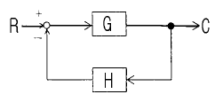
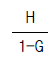
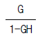
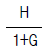
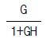
(정답률: 69%)
27. 교류 3상3선식 배전선로에서, 전압을 200V에서 400V로 승압하였다면 전력손실은? (단, 부하용량은 같다.)
- 2배로 된다.
- 4배로 된다.
- 1/2 배로된다.
- 1/4 배로된다.
(정답률: 37%)
28. 권수가 2000회, 저항이 12Ω인 코일에 5A의 전류를 통했을 때의 자속이 3×10-2Wb가 생겼다. 이회로의 시정수는 몇 sec 인가?
- 0.⑤
- 0.1
- 1
- 10
(정답률: 40%)
29. 단상변압기(용량 100kVA)3대를 △결선으로 운전하던중 한대가 고장이 생겨 V 결선하였다면 출력은 몇 kVA 인가?
- 200
- 300
- 100√3
- 200√3
(정답률: 64%)
30. 그림과 같은 1㏀의 저항과 실리콘다이오드의 직렬회로에서 전압 VD의 크기는 몇 V 인가?
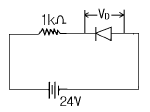
- 0
- 0.1
- 0.024
- 24
(정답률: 70%)
31. 제어요소가 제어대상에 주는 상태의 양은?
- 조작량
- 제어량
- 검출량
- 측정량
(정답률: 69%)
32. 두 종류의 금속으로 폐회로를 만들어 전류를 흘리면 양접속점에서 한 쪽은 온도가 올라가고 다른 쪽은 온도가 내려가는 현상은?
- 펠티에 효과
- 제어백 효과
- 톰슨 효과
- 호올 효과
(정답률: 72%)
33. 회로에서 A-B, B-C간에 걸리는 전압은 몇 V 인가
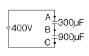
- A-B: 300, B-C: 100
- A-B: 100, B-C: 300
- A-B: 150, B-C: 250
- A-B: 250, B-C: 150
(정답률: 45%)
34. i=50sinωt인 교류전류의 평균값은 약 몇 A 인가?
- 25
- 31.8
- 35.9
- 50
(정답률: 50%)
35. 전기식 증폭기기가 아닌 것은?
- 노즐플래퍼
- 앰플리다인
- SCR
- 다이라트론
(정답률: 36%)
36. 전자접촉기의 보조 a접점에 해당되는 것은?
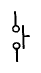
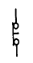
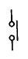
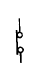
(정답률: 69%)
37. 진성반도체에서 페르미 준위는 온도와 어떤 관계에 있는가?
- 온도가 상승하면 전도대쪽으로 접근한다.
- 온도가 하강하면 전도대쪽으로 접근한다.
- 온도에 관계없이 전도대쪽으로 접근한다.
- 온도에 관계없이 금지대 중앙에 위치한다.
(정답률: 32%)
38. 펌프나 송풍기와 같이 부하 토크가 기동할 때는 작으며, 가속하는데 따라 늘어나는 50마력정도의 부하에 동력을 공급하기 위하여 3상 농형유도전동기를 사용한다면 어떤 기동방법이 가장 효과적 이겠는가?
- Y-△기동법
- 리액터기동법
- 전전압기동법
- 기동보상기법
(정답률: 40%)
39. 저항 R1, R2 와 인덕턴스 L의 직렬회로가 있다. 이 회로의시정수는?
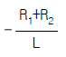
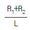
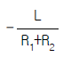
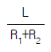
(정답률: 69%)
40. 그림과 같은 회로에서 R1과 R2가 각각 2Ω 및 3Ω이었다. 합성저항이 4Ω이면 R3는 몇 Ω 인가?
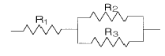
- 5
- 6
- 7
- 8
(정답률: 70%)
3과목: 소방관계법규
41. 소방시설의 종류중 "소화활동설비"가 아닌 것은?
- 상수도소화용수설비
- 제연설비
- 연결송수관설비
- 연결살수설비
(정답률: 64%)
42. 소방본부장 또는 소방서장은 화재의 예방 또는 진압대책을 위하여 소방대상물의 검사를 할 수 있으나 반드시 관계인의 승낙이 있거나 화재발생의 우려가 현저하여 긴급을 요할 때에만 할 수 있는 곳은?
- 제조공장
- 전시장
- 교회
- 개인의 주거
(정답률: 72%)
43. 바닥면적이 기준면적이상일 경우라도 자동화재속보설비를 설치하지 않아도 되는 시설은?
- 판매시설
- 숙박시설
- 의료시설
- 공연시설
(정답률: 31%)
44. 아파트로서 층수가 몇 층 이상인 것은 그 층이상의 층에 스프링클러설비를 설치하여야 하는가?(관련 규정 개정전 문제로 여기서는 기존 정답인 3번을 누르면 정답 처리됩니다. 자세한 내용은 해설을 참고하세요.)
- 11
- 13
- 16
- 20
(정답률: 58%)
45. 옥내저장소의 구조 및 설비에서 저장창고는 위험물 저장을 전용으로 하는 독립된 건축물로 하고, 하나의 저장창고의 바닥면적은 을종위험물을 저장하는 창고인 경우 몇m2 이하로 하여야 하는가?
- 1000
- 1500
- 2000
- 2500
(정답률: 29%)
46. 위험물저장소로서 옥내저장소의 하나의 저장창고 바닥면적은 갑종위험물을 저장하는 창고에 있어서는 몇 m2 이하로 하여야 하는가?
- 300
- 500
- 800
- 1000
(정답률: 35%)
47. 화학소방자동차의 소화능력의 기준으로 포말을 방사하는차에 있어서는 포수용액의 방사능력이 매분 몇 리터이상이어야 하는가?
- 1000
- 2000
- 3000
- 4000
(정답률: 41%)
48. 소방신호에서 화재예방.소화활동. 소방훈련을 위하여 사용되는 신호의 종류와 방법은 무엇으로 정하는가?
- 지방자치령
- 대통령령
- 행정자치부령
- 치안본부령
(정답률: 34%)
49. 소방본부장 또는 소방서장이 불의의 재해 그 밖의 위급한상태에서 즉시 필요한 처치를 하지 아니하면 그 생명을 보존할 수 없는 등 위급한 환자를 응급처치하거나 의료기관에 긴급히 이송하기 위하여 편성, 운영할 수 있는 조직은?
- 의용소방대
- 구급대
- 구조대
- 민방위대
(정답률: 60%)
50. 방화관리업무등의 강습은 연 몇회 실시 하는가?
- 2회
- 4회
- 5회
- 수시로
(정답률: 60%)
51. "무창층"이라 함은 지상층 중 피난 또는 소화활동상 유효한 개구부의 면적의 합계가 그 층의 바닥면적의 얼마이하가 되는 층을 말하는가?
- 1/20
- 1/30
- 1/40
- 1/50
(정답률: 71%)
52. 형식승인대상 소방용 기계기구가 아닌 것은?
- 송수구
- 휴대용 비상조명등
- 소방펌프
- 방염제
(정답률: 68%)
53. 화재가 발생하였을 때 소방본부장 또는 소방서장이행하는 화재조사의 내용을 옳게 설명한 것은?
- 화재의 성상과 화재로 인한 인명의 피해
- 화재의 원인과 화재 또는 소화로 인하여 생긴 손해
- 화재의 원인을 조사하기 위한 화재 감식
- 화재로 인한 인적 및 물적 손해 정도
(정답률: 30%)
54. 석유판매취급소의 작업실의 출입구에는 바닥으로부터 몇[cm] 이상의 턱을 설치하여야 하는가?
- 10
- 15
- 20
- 25
(정답률: 41%)
55. 소방대상물로서 지정문화재는 연면적 몇 m2 이상인 경우에 옥외소화전설비를 설치하여야 하는가?
- 500
- 1000
- 1500
- 2000
(정답률: 41%)
56. 특수장소에 대한 소방계획은 누가 작성하는가?
- 소방서장
- 방화관리자
- 소방안전협회장
- 의용소방대장
(정답률: 35%)
57. 위험물탱크안전성능 시험자가 반드시 갖추어야 할 장비는?
- 수압기
- 비중계
- 검량계
- 절연저항계
(정답률: 43%)
58. 다음중 위험물제조소의 배출설비의 배출능력은 1시간당 배출장소 용적의 몇배 이상 인가?
- 5배
- 10배
- 15배
- 20배
(정답률: 29%)
59. 소방상 필요할 때 소방본부장.소방서장 또는 소방대장이 할 수 있는 명령에 해당되는 것은?
- 화재현장에 이웃한 소방서에 소방응원을 하는 명령
- 그 관할구역안에 사는 사람 또는 화재현장에 있는 사람으로 하여금 소화에 종사하도록 하는 명령
- 관계 보험회사로 하여금 화재의 피해조사에 협력 하도록 하는 명령
- 소방대상물의 관계인에게 화재에 따른 손실을 보상하게 하는 명령
(정답률: 40%)
60. 위험물제조소의 옥외에 있는 하나의 취급 탱크에 설치하는 방유제의 용량은 당해 탱크 용량의 몇 % 이상으로 하는가?
- 50
- 60
- 70
- 80
(정답률: 30%)
4과목: 소방전기시설의 구조 및 원리
61. 자동화재탐지설비의 발신기의 설치기준으로 옳은 것은?
- 관계인이외의 조작에 의한 고장의 우려가 있으므로 조작이 쉽지 않은 곳에 설치한다.
- 소방대상물의 격층마다 설치하되, 지하층에 있어서는 각층마다 설치한다.
- 당해 소방대상물의 각 부분으로부터 하나의 발신기 까지의 수평거리는 25m이하가 되도록 설치한다.
- 발신기의 위치표시를 하는 표시등은 옥내소화전함의 하부에 설치한다.
(정답률: 65%)
62. 누전경보기의 전원에 대한 설명으로 옳은 것은?
- 전원은 분전반으로부터 전용회로로 하고, 각극에 개폐기 및 15A이하의 과전류차단기를 설치한다.
- 전원은 분전반으로부터 전용회로로 하고, 각극에 개폐기 및 20A이상의 과전류차단기를 설치한다.
- 전원은 동력펌프설비와 공용하여 사용하고, 과전류 차단기의 용량은 20A이하로 설치한다.
- 전원은 동력펌프설비와 공용하여 사용하고, 과전류 차단기의 용량은 30A이상으로 설치한다.
(정답률: 66%)
63. 무선통신보조설비의 증폭기의 설치기준으로 옳지 않은 것은?
- 전원은 전기가 정상적으로 공급되는 축전지 또는 교류전압 옥내간선으로 한다.
- 전원까지의 배선은 전용으로 한다.
- 증폭기의 전면에는 주회로의 전원이 정상인지의 여부를 표시할 수 있는 표시등 및 전압계를 설치한다.
- 증폭기에는 비상전원이 부착된 것으로 하고, 당해전원의 용량은 무선통신보조설비를 유효하게 20분이상 작동시킬 수 있는 것으로 한다.
(정답률: 60%)
64. 자동화재속보설비의 속보기는 화재탐지설비로부터 수신한 신호를 몇 초이내에 소방관서에 자동적으로 신호를 통보 하여야 하는가?
- 10
- 20
- 30
- 60
(정답률: 42%)
65. 제연설비의 기동장치에 대한 설명으로 옳은것은?
- 자동기동장치만 있다.
- 수동기동장치만 있다.
- 자동 및 수동기동장치가 있다.
- 수동기동장치의 설치높이는 1.5m이상이어야 한다.
(정답률: 63%)
66. 자동화재탐지설비의 화재표시작동시험으로 확인할 수 없는 것은?
- 지구표시등의 점등 유무
- 주음향장치의 명동 유무
- 각회선의 전압계의 지시치 정상 유무
- 감지기배선의 단선 유무
(정답률: 40%)
67. 비상콘센트설비의 비상콘센트에 관한 시설기준으로 옳지 않은 것은?
- 하나의 전용회로에 설치하는 비상콘센트는 10개이하로 한다.
- 지하층 및 지하층을 제외한 층수가 11층이상의 각층에 설치한다.
- 바닥으로부터 0.8m이상, 1.5m이하에 설치한다.
- 비상콘센트용 풀박스는 두께 1.6mm이상의 철판으로한다.
(정답률: 12%)
68. 누전경보기의 설치 장소로 적당한 곳은?
- 가연성 가스. 증기 등이 체류하는 장소
- 습도가 높은 장소
- 대전류 회로가 있는 장소
- 옥내의 점검에 편리한 장소
(정답률: 78%)
69. 옥내소화전의 위치를 표시하는 표시등은 함의 상부에설치하며 그 불빛이 부착면으로부터 몇 도이상의 범위안에서 식별할 수 있어야 하는가?
- 5
- 10
- 15
- 30
(정답률: 54%)
70. 열전대식 차동식 분포형감지기에서 하나의 검출부에 접속 하는 열전대부는 몇 개이하로 하여야 하는가?
- 20
- 25
- 30
- 35
(정답률: 57%)
71. 스프링클러설비의 음향장치는 유수검지장치등의 담당구역마다 설치하되 그 구역의 각 부분으로부터 하나의 음향장치까지의 수평거리는 몇[m]이하가 되도록 하여야 하는가?
- 25
- 30
- 35
- 40
(정답률: 78%)
72. 방재설비의 동작에 따른 종합방재센터에서 조작,표시,기록의 3가지를 하여야 하는 설비는?
- 비상벨
- 유도등
- 스프링클러설비
- 출입감지설비
(정답률: 38%)
73. 정온식 스포트형감지기에서 감도에 따른 종류가 아닌 것은?
- 제1종
- 제2종
- 제3종
- 특종
(정답률: 41%)
74. 준비작동식 스프링클러설비의 솔레노이드 밸브에 전원을 공급하여 작동시켰다. 이때 제어반의 전원으로부터 공급되는 전압과 솔레노이드 밸브의 단자전압이 선로에서의 전압강하로 서로 달랐다. 다음중 선로의 전압강하에 영향이 없는 것은?
- 솔레노이드 밸브와 제어반의 전원까지의 선로의 길이
- 솔레노이드 밸브와 제어반의 전원까지 연결되는 전선의 굵기
- 솔레노이드 밸브의 정격전류
- 제어반의 종류
(정답률: 59%)
75. 축전지를 사용한 비상전원에서 전해액이 감소되었을 때 어떤 것을 보충하면 되겠는가?
- 황산
- 증류수
- 식염수
- 염산
(정답률: 62%)
76. 자동화재탐지설비의 경계구역은 하나의 경계구역이 2개이상의 층에 미치지 않아야 하는데, 다만 몇 m2이하의 범위안에서는 2개의 층을 하나의 경계구역으로 할 수 있는가?
- 300
- 500
- 700
- 1000
(정답률: 49%)
77. 자동화재탐지설비의 음향장치는 정격전압의 몇 페센트 전압에서 음향을 발할 수 있는 것으로 하는가?
- 80
- 70
- 60
- 50
(정답률: 68%)
78. 통로의 길이가 40m인 극장의 통로바닥에는 객석유도등을 최소 몇 개이상 설치하여야 하는가?
- 7
- 8
- 9
- 10
(정답률: 64%)
79. 자동화재탐지설비의 감지기회로 배선의 단선여부를 시험하는 방법으로 적당하지 못한 것은?
- 회로도통시험
- 동시작동시험
- 유통시험
- 화재표시작동시험
(정답률: 50%)
80. 차동식분포형감지기로서 공기관식의 구조 및 기능으로옳은 것은 ?
- 공기관은 하나의 길이가10m 정도이다.
- 공기관의 두께는 최소 8mm이상이어야 한다.
- 발광소자를 사용하여 공기관의 누출여부를 시험한다.
- 리크저항 및 접점수고를 쉽게 시험할 수 있어야 한다.
(정답률: 43%)